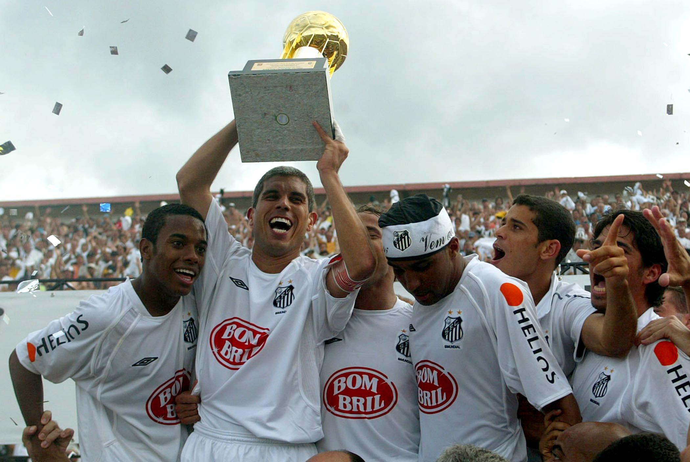

Antes do raio cair novamente no mesmo lugar.
Após anos e anos de marasmo, aquele time que encantou o Brasil na década de 60 com O Rei Pelé e seu parceiro Coutinho, na década de 2000, não passava de um clube pobre e que não disputava nada.
Pelo fato de ter comprado jogadores caros e que não renderam nenhum título e consequentemente dinheiro, o Santos começou a entrar em falência, fazendo com que assim, voltassem a usar a única coisa que deu sucesso para o clube em seus 110 anos(90 na época), A BASE.
O Surgimento de Diego, Robinho, Alex e Elano.
Possivelmente, umas das mais emocionantes edições de Campeonato Brasileiro foi a de 2002. O Santos com um elenco praticamente sub-20 e desacreditado passou por cima de times como: O São Paulo de KAKÁ e Luis Fabiano, um Grêmio que jogava mais na base da raça do que na habilidade, e por último: O Corinthians de Gil, Vampeta, Deivid e Guilherme.
Como dito anteriormente, depois do fiasco de 2001, com graves problemas financeiros e sem nenhuma alternativa para contratar jogadores, eles tiveram de ir para as categorias de base.
Emerson Leão, técnico recém-contratado e com um fraco trabalho tanto na seleção brasileira e no Juventude, viu nos garotos da base, uma esperança, esses garotos eram:
Diego Ribas
(Um habilidoso meia que chutava muito bem de fora da área e armava muito bem o jogo, além de dribles e muito velocidade), estreou no profissional com apenas de 16 anos e com a 10 do Rei Pelé. Estreou em janeiro de 2002 e fez 133 partidas e 38 gols.
Depois de 2 temporadas como um dos destaques do time, foi vendido para o Porto em 2004 por €10 milhões de euros.
Robinho
(O Camisa 7 driblador, velocista e que criava muitas jogadas, mas pouco finalizava entre 2002-2003, porém nas poucas vezes em que marcou gols, sempre era em jogos decisivos). Explodiu em 2004, a onde foi novamente Campeão Brasileiro e melhor jogador.
O camisa 7 estreou em março de 2002 e teve três passagens no clube, a segunda em 2010 e a terceira em 2014. Fez 253 jogos e 111 gols.
Com um futebol em alta, chamou a atenção do Real Madrid em 2005 e foi vendido por €32 milhões de euros.
Alex
(O Camisa 6, o Canhão da Vila, o zagueiro artilheiro, também da base do Santos, além de ser um absurdo defensivamente e fisicamente, Alex tinha outra habilidade e até que bem incomum entre os zagueiros:(A FINALIZAÇÃO DE FORA DA ÁREA!).
Estreou agosto de 2002, fazendo 103 jogos e marcando incríveis 20 gols.
Depois de muitas partidas em alto nível, chamou a atenção do Chelsea e acabou sendo vendido em 2004 por €12 milhões de euros.
Elano
(O Camisa 11 e depois Camisa 8 em sua segunda passagem era possivelmente o jogador mais polivalente do time, o mais raçudo e que sempre marcou gols decisivos e também provavelmente o jogador mais importante do time, já que Elano contribuia tanto para o ataque quanto pra defesa do time.
Estreou em janeiro de 2001 e foi importante no Brasileiro de 2002 e 2004(inclusive o Santos sentiu muito sua perda na final de 2003) principalmente. Fez 322 jogos com a camisa do peixe e marcou 68 gols.
Depois de muito destaque e marcando muitos gols importantes pelo peixe, foi vendido por €7,5 milhões de euros para o Shakhtar Donetsk.

A Campanha do Santos em 2002
Agora que pincelamos as principais estrelas do time naquele ano, iremos falar um pouco sobre como foi o ano do Santos em 2002. Depois de um torneio RIO-SP fraco, o Santos era forte candidato ao rebaixamento, tanto pelos graves problemas financeiros e por metade do time titular ser de garotos da base com menos de 19 anos.
O Santos fez um campeonato brasileiro apenas razoável e se classificou para o mata-mata graças a outros resultados, fazendo com que assim o Santos fosse o último da lista para jogar o mata-mata, e logo de cara, pegaria o São Paulo na Vila Belmiro.
No primeiro Jogo na Vila Belmiro, o Santos mostrou toda a capacidade ofensiva e com gols de Alberto, Robinho e Diego, ganharam de 3x1 na Vila e precisando apenas segurar o resultado no Morumbi. Mas o Santos não queria apenas segurar o resultado, queria mais, e com mais um show de Diego e Robinho, venceram por 2x1, classificação essa que impressionou há todos na época, já que o São Paulo disparado era o melhor time do Brasil naquele momento.

O próximo desafio do time da baixada era o Grêmio e com mais um show de futebol, ganharam deles com sobras na Vila Belmiro por 3x0 e com mais um show de Robinho, porém no jogo de volta perderam por 1x0, mas já não importava mais, pois no placar agregado ficaria 3x1, e o mais importante, a tão desejada vaga na final. E sonho esse, que parecia impossível para eles no começo do campeonato, depois de 7 anos, o Santos voltava a disputar uma final de brasileiro.
A Grande Final do Brasileiro de 2002
O último adversário não podia ser outro, era o Corinthians, um dos maiores rivais do peixe e com um time que vinha embalado já com 2 títulos no ano, Copa Do Brasil de 2002 e o Torneio RIO-SP de 2002. Ambos os jogos da final sendo no Morumbi.

No primeiro jogo, o Santos derrotou o Corinthians por 2x0, com gols de Alberto e Renato. Porém era cedo demais para comemorar, pois no jogo de volta, com menos de 1 minuto de jogo, Diego, Camisa 10 e um dos protagonistas do time junto de Robinho, sentia fortes dores e teve que ser substituido. No entanto, para o azar da torcida corinthiana, tinha um tal de Robinho que em uma jogada individual, pedalou 8 vezes em cima de Rogério, lance esse que até hoje é o que mais representa essa geração do Santos.
A jogada individual das pedalas originou um pênalti, pênalti esse que o próprio Robinho bateu e converteu. Um garoto de apenas 18 anos era disparado o melhor jogador daquela edição de Campeonato Brasileiro, marcou gol em todas as partidas do mata-mata, marcou contra o São Paulo, Grêmio e Corinthians. Porém 3 gols de vantagem encima do Corinthians era muito pouco e mesmo com 3 gols de desvantagem, não se abalaram e foram pra cima, e marcaram 2 gols, o placar agregado era 3x2.
Depois do Brasileiro de 83 e do Brasileiro de 1995, os torcedores santistas por um momento, ficaram com medo de que, de novo, pela terceira vez, batessem na trave, MAS NÃO, o garoto Robinho não deixou isso acontecer, pegou a bola e iniciou uma jogada pela direita, cruzou para que Elano(outro garoto da base) pudesse marcar aos 43' do segundo tempo, Santos 2x2 Corinthians. No entanto, Robinho queria mais, e depois de mais uma jogada espetacular, tocou para Léo que em um chute absurdo, fez com que o Santos fosse Campeão Brasileiro de 2002, com um placar agregado de 5x2. Com muitas doses de drama, o Brasil tinha um novo campeão Nacional.
O time de Pelé, mais uma vez renascia, e com o que simboliza o Santos, o garoto negro e driblador, OS MENINOS DA VILA ERAM CAMPEÕES DO BRASILEIRO DE 2002.

O Ano De 2003, O Ano Do "Quase"

Depois de um ano de 2002 mágico, o Santos depois de décadas voltava a disputar uma Libertadores. O time de Diego e Robinho continuava impressionando a todos, conseguindo 4 vitórias e 2 empates na fase de grupos.
O primeiro desafio do time da baixada pelo mata-mata da Libertadores era contra O Nacional(URU), depois de um 4x4 no primeiro jogo, em Montevidéu, e um 2x2 no Brasil, o time passava paras as quartas em uma disputa de pênalti.

Pelas quartas de final, enfrentaram o Cruz Azul. O time da baixada empatou em 2x2 no México, e venceu na Vila Belmiro por 1x0, gol de Robinho.

Nas semi finais, enfrentaram o Independiente Medellín(COL), com o resultado de 1x0 na Vila, e 3X2, fora.

Infelizmente, para o azar dos Meninos da Vila(que vinham fazendo história, afinal uma equipe só de garotos chegar em uma Final de Taça Libertadores, com um time QUE apesar de grande, estava há 19 anos sem disputar a competição, por si só já era um grande feito), eles pegariam o destemido BOCA JUNIORS na grande final.

As partidas da Grande Final, seriam respectivamente na La Bombonera, pelo jogo de ida, e no Morumbi, pelo jogo de volta. O Santos, que até então não sabia o que era o gosto da derrota naquela Libertadores, conhecia pela primeira vez ela, mas infelizmente no pior momento, logo na final. O Boca Juniors vencia em casa por 2x0. No Morumbi, O Santos até começou melhor, mas perdeu oportunidades e viu ruir o sonho do TRI, 3x1, no Morumbi. Boca Juniors, o time que ousou tirar uma Libertadores de Diego e Robinho.
Depois do frustrante vice para o Boca Juniors, o Santos não teve forças para alcançar o Cruzeiro de Alex, afinal focaram na Libertadores e deixaram o Brasileiro de lado, campeonato esse que era o primeiro em pontos corridos na história.
O time de Alex venceu com folga e mais uma vez o Santos amargurava um vice-campeonato. Infelizmente o grito de campeão ficava intalado mais uma vez. Triste, pois esse em minha opinião é o melhor time da história do Santos, depois de Pelé e companhia. A única coisa que deixava a desejar neste elenco era a inexperiência dos jogadores, mas infelizmente este foi o fator que vez o Santos amargurar 2 vices no ano.
Robinho tinha apenas um defeito entre 2002-2003: não era finalizador. O menino da vila construía jogadas maravilhosas, costurava defesas inteiras, mas pecava na finalização.
Depois de uma campanha decepcionante na Libertadores 2004, sendo eliminados para o surpreendente Once Caldas(clube esse que ganhou de Santos, São Paulo e do Boca Juniors na grande final), o Santos se voltou todo para o campeonato brasileiro daquele ano.
Este foi exatamente o ponto que Vanderlei Luxemburgo corrigiu, Robinho naquele ano mais uma vez seria protagonista, porém marcando muito mais gols.
Como dito anteriormente o Santos foi eliminado pelo Once Caldas, e se voltou completamente para o Brasileiro daquele ano e infelizmente com algumas peças a menos como: Diego Ribas, Alex e Paulo Almeida, que tinham sido vendidos logo após a eliminação. Isso fez com que o time no começo tivesse alguns problemas na defesa e na criação, porém o técnico Luxemburgo arrumou isso fazendo um jogo coletivo e rápido.
Até a 33.º rodada, o principal rival do Santos era o Athlético-PR que estava na liderança brigando para ganhar o título. Athlético-PR esse que há alguns anos tinha sido Campeão Brasileiro de 2001, e depois vice da Libertadores 2005.
O Santos lutou pelo titulo até o último jogo, que foi contra o Vasco, o Santos ganhou por 2x1, mais uma vez o Santos levantava um caneco para a alegria da torcida, com Robinho e Deivid tendo anotados 22 gols cada, apesar dos problemas de arbitragem, o Santos ganhava seu oitavo título brasileiro.
Depois de mais um caneco levantado, era impossível para o Santos segurar sua maior joia, Robinho. Depois de muitas especulações, o menino da vila foi para o Real Madrid ser o camisa 10.
Apesar de Diego e Robinho não terem correspondido as expectativas de serem os melhores jogadores do mundo, tiveram carreiras bem sólidas. O legado que eles deixaram foram o da alegria e ousadia que tanto faltava no Santos. O peixe só não foi campeão também em 2003, pois focou na Libertadores. Uma geração gigante em termos de titulos e futebol bem jogado. Se não existisse Diego e Robinho, possivelmente nunca veriamos Neymar e Ganso.